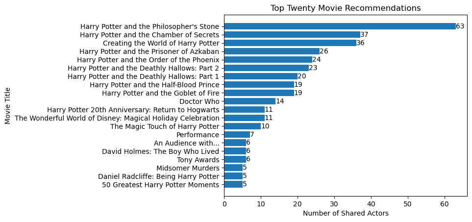

import pandas as pd
import matplotlib.pyplot as plt
import osIn this blog post, I’m going to create a web scraper that will allow us to recommend new movies based on shared actors with your favorite movie.
The first thing we are going to do is navigate to the website called TMDB, found at the URL https://www.themoviedb.org/ . We can now pick our favorite movie that will be the basis of our recommendations, mine is Harry Potter and the Philosopher’s Stone. Next, I navigated to the main movie page found at: https://www.themoviedb.org/movie/671-harry-potter-and-the-philosopher-s-stone This URL is important to save for later as it will be the starting point for our spider. Now we can start to create our spider. The first step is to type the following into the terminal:
conda activate PIC16B-24W scrapy startproject TMDB_scraper cd TMDB_scraper
This command will activate the PIC16B-24W environment that we installed previously, create a scrapy project with the name TMDB_scraper on your computer, and then change the directory of your terminal to your newly created project. As we navigate to the TMDB_scraper folder, we see that there are various files within the project, however first we want to navigate to the file titled ‘settings.py’, and add the following line:
```
CLOSESPIDER_PAGECOUNT = 20
```This will limit the number of pages our spider will visit initially, limiting the amount of data it will acquire when we are constructing and debugging. Additionally, I wrote the line:
USER_AGENT = ‘Mozilla/5.0 (iPad; CPU OS 12_2 like Mac OS X) AppleWebKit/605.1.15 (KHTML, like Gecko) Mobile/15E148’
This line helps to minimize the chance that the website identifies your spider as a bot and tries to block the web scraping process. Finally, it is time to begin writing our spider. Inside of our project folder, navigate into the spiders directory and create a new file titled ‘tmdb_spider.py’, and add the following chunk of code to the file:
import scrapy
class TmdbSpider(scrapy.Spider):
name = 'tmdb_spider'
def __init__(self, subdir=None, *args, **kwargs):
self.start_urls = [f"https://www.themoviedb.org/movie/{subdir}/"]This code chunk will allow us to run the spider for our movie of choice from the terminal by giving the subdirectory on the TMDB website as our extra argument. Now that we have a working spider, it is time to implement our three parsing methods: parse(self, response), parse_full_credits(self, response), and parse_actor_page(self, response).
Let’s start with the parse(self, response) function. The role of this function is to navigate from our main movie page to the ‘Full Cast and Crew’ page. If we go back to our main movie page, and navigate to the ‘Full Cast and Crew’ page, we can see that the only change in our URL is there is now a ‘/cast’ at the end. That tells us, all we need to do to get to our cast page is to add ‘/cast’ to the end of our current URL, and send our spider to the page found by our new URL. As we can see in the function below, we define our new URL to be called ‘full_credits_url’ which is created by taking ‘response.url’, the URL of the page we’re on, and adding the string ‘/cast’ to the end. As we now have the URL for the page we want to navigate to, we yield a scrapy.Request to send our spider to the cast page, passing our new ‘full_credits_url’ as the URL parameter, and setting the callback to the parse_full_credits() function as we will now navigate to the full credits page.
def parse(self, response):
'''
This function takes us from the main movie page to the cast and credits page yielding the url of the full credit page to be parsed by the parse_full_credits
'''
#modifies url in order to navigate to the cast page
full_credits_url = response.url + '/cast'
#sends spider to the full credit page
yield scrapy.Request(url=full_credits_url, callback=self.parse_full_credits)Now that we have made it onto the full cast and credits page, we will work with the parse_full_credits(self, response) function that was called as we navigated to this page. The goal of this function is to find all the actors who played a role in the movie and send our spider to their individual pages to be parsed by our final function parse_actor_page(). Last time we were able to navigate to the cast page by simply adding ‘/cast’, however as each actor has their own distinct name and page, we will not be able to hardcode the new URL. In fact if you click on the first actor or actress in the list, in my case Daniel Radcliffe, we see that the URL for their individual page contains a seemingly arbitrary number followed by their name. In order to find the extension for each actor, let us navigate back to the full cast and credits page. By right clicking on the top actor or actress’s name, followed by clicking inspect, we can see where their name is stored in the HTML file. More importantly, just before where their name is stored in text, we see something similar to ‘ Daniel Radcliffe’. Should we navigate back to Mr. Radcliffe’s page, we can see that the the element defined as ‘href’ is the same as the URL extension for the page, after the ‘https://www.themoviedb.org/’ that all pages on the TMDB site begin with. Clearly this is critical information as it will allow us to navigate to the actor or actress’s page using their URL extension. Now, we simply need to find a way to access this information for all of the actors. As we go back to the cast and credits page and look at the line where the first name was stored, we can traverse backwards to the line starting with “<li data-order=”0” data-credit-id=” and then up again to the line reading ‘<ol class = “people credits”>’. It is important to note the information of all the cast members, including their names and the ‘href’ URL extensions we are trying to extract are all located under this ol class. We want to access this class from the HTML file in order to use it in our function, which we will be able to accomplish using css selectors. By taking a look at the first line of code, we can see that in the selector, we start in the overarching ol class, before specifying to travel down through the li class and finally asking for the attribute ‘href’ located within a. One thing to note about this line is the ‘:not(.crew)’ following the ol class. This effectively tells the program that all we do not want the attributes of any of the crew members, but only the attributes of the actors. Additionally, the .extract() command at the end of the line effectively gathers the information from the location we specified in the selector, allowing us to assign it to our variable actor_selectors. This command returns a list of the URL extensions for every actor in the movie and stores it in the actor_selectors variable. Now that we have the URL extensions, we can finish this function in a similar manner to the initial parse() function by creating new URLs for the spider to follow. As we observed before, every actor page starts with ‘https://www.themoviedb.org/’, and is followed by a tail unique to each actor which we have stored in the actor_selectors list. Now, to send our spider to each actor page, we simply write a for loop that iterates through all of the actor extensions in our actor_selectors list, add the extension to the generic URL started mentioned above, and again send the spider to the new page addressed by our new URL saved as actor_page_url. Our yield scrapy.Request() is slightly different than the one we used in the previous function as instead of calling parse_full_credits(), we are going to call parse_actor_page() as the spider is now traveling to an individual actor page.
def parse_full_credits(self, response):
'''
This function navigates from the response's full credits page to each actor's individual page to be parsed in the parse_actor_page() function.
'''
#creates list of cast members, excluding the crew members
actor_selectors = response.css('ol.people.credits:not(.crew) li div.info a::attr(href)').extract()
#for loop iterates over actor list sending spider to each actor page
for actor_ in actor_selectors:
actor_page_url = 'https://www.themoviedb.org'+actor_
yield scrapy.Request(url=actor_page_url, callback=self.parse_actor_page)’ which are all under a table class titled ‘credits list’. While we could try and simply use the css selectors to try and locate this class as before, we must notice that there are two other classes with the same title, which would clearly make it somewhat tricky for the program to decipher exactly which one we are trying to access. Taking a closer look at these three classes, we can observe an h3 line above each one which are identical except for one word in each, the different words being ‘Acting’, ‘Production’, and ‘Crew’. Clearly we want to access the one referring to the acting roles, as we are not concerned with production and crew roles, however we need to find a way to access the correct table under acting. By taking another glance at the HTML file, we can see that the three classes of interest are all located within a div class titled ‘credits_list’. We can take advantage of this by creating a list of all the h3 terms under this list via the command defining datCred. Now that we have the list, we can simply search for which h3 contains the word ‘Acting’ to find exactly which table we want by using a for loop to iterate through each h3 element in datCred. We check for acting by checking if ‘Acting’ is in the text of the h3 element, as found in the condition of the if statement within the for loop. Now that we have identified which h3 term we want to follow, we will take advantage of xpath, another kind of selector, which has a useful function called ‘following-sibling’. This specifier tells the selector to follow a sibling class, a class with the same parent and on the same level as the initially specified node, and we have then included the xpath to ‘table[1]’ in which the tr classes containing the movie names are located, saving it to the variable txt. We then use the Selector() function to make it so that we can access just the data under the location we specified as opposed to the entire response that scrapy has found. It is worth noting that to run this command we must import the selector library from scrapy.Selector at the top of the page, with the line of code shown just below:
from scrapy.selector import Selector
Finally, we use the subset of the response to extract the movie titles for the actor. This process is shown in the final for loop. We call all elements in ‘tablePick.css(‘table.credit_group tr’)’ to access all of the tr classes individually, and then set the movOrTvName to the text under the class ‘role’ and within the ‘tooltip’ class and as the bdi attribute in the HTML file. Finally, we yield a dictionary with the actor name that we found in the beginning of the function, and the movie name that we just found. This will loop through all of the movies that the actor played a character in, resulting in all of their movies being represented in their own dictionaries to be saved in a .csv file we will create next.
def parse_actor_page(self, response):
'''
This function parses the actor page, extracting both the actor name and the movies/shows they were in, yielding the dictionaries with the actor name and the movies they appear in.
'''
#extracts actor name from page
actor_name = response.css('h2.title a::text').extract_first().strip()
#list of data under actor acting appearances
datCred = response.css('div.credits_list h3')
#filtering to just acting roles
for h3 in datCred:
if 'Acting' in h3.xpath('./text()').get():
txt = h3.xpath('following-sibling::table[1]').get()
break
#making tablePick a selector used to follow to movie data
tablePick = Selector(text = txt)
#extract and yield movie/show name with the actor name
for cred in tablePick.css('table.credit_group tr'):
movOrTvName = cred.css('td.role a.tooltip bdi::text').get().strip()
yield{'actor': actor_name, 'movie_or_TV_name' : movOrTvName}Now that we have finished writing our spider, we are ready to run it in order to scrape our desired data off of the TMDB website. The first thing we need to do is go back into the settings.py file and comment out the page count limit we implemented just before creating our spider to allow our spider to scrape all of the pages it is sent to. We can now go back to the terminal and run the following command:
scrapy crawl tmdb_spider -o results.csv -a subdir=671-harry-potter-and-the-philosopher-s-stoneNote that the command is all one on the same line. This command will tell our spider to crawl on the website for the first Harry Potter movie as given by the subdirectory, and will write all of the results in a file named ‘results.csv’. If we go back into the project folder, we can open the file we just created and we will see dictionaries represented by a table with one column containing the actor names and the other column containing the titles of the movies that respective actor appeared in. This is where we will access the results our spider was able to produce. We can now use this data to create our recommendations.
#checking directory
notebook_path = os.getcwd()
print(notebook_path)/Users/jakebrowning#reading in the data we scraped using our spider
df = pd.read_csv('/Users/jakebrowning/Desktop/PIC16B/TMDB_scraper/results.csv')#using for loop to create a counting function for how many actors are in each movie
movDict = {}
for el in df1:
if el in movDict.keys():
movDict[el] = movDict[el]+1
else:
movDict[el] = 1#adjusting my dictionaries for the pandas dataframe
sortedMovDict = sorted(movDict.items(), key=lambda x:x[1], reverse=True)
convertedMovDict = dict(sortedMovDict)#putting the counted dictionary into a pandas dataframe and displaying the dataframe
dfList = pd.DataFrame(list(convertedMovDict.items()),columns=['Movie Name','Number of Shared Actors'])
dfList| Movie Name | Number of Shared Actors | |
|---|---|---|
| 0 | Harry Potter and the Philosopher's Stone | 63 |
| 1 | Harry Potter and the Chamber of Secrets | 37 |
| 2 | Creating the World of Harry Potter | 36 |
| 3 | Harry Potter and the Prisoner of Azkaban | 26 |
| 4 | Harry Potter and the Order of the Phoenix | 24 |
| ... | ... | ... |
| 2269 | Queen Kong | 1 |
| 2270 | Frankenstein: The True Story | 1 |
| 2271 | The Darwin Adventure | 1 |
| 2272 | The Canterbury Tales | 1 |
| 2273 | The Sooty Show | 1 |
2274 rows × 2 columns
#creating lists of the top twenty movies and their numbert of actors
movN = []
numAct = []
i=0
while i < 20:
movN.append(dfList['Movie Name'][i])
numAct.append(dfList['Number of Shared Actors'][i])
i = 1+i#changing order of list to be better displayed in the graph
movN.reverse()
numAct.reverse()#creating bar chart with top twenty movie recommendations, displaying how many shared actors in each movie
myChart = plt.barh(movN, numAct)
plt.bar_label(myChart, labels=numAct, label_type="edge")
plt.title('Top Twenty Movie Recommendations')
plt.xlabel('Number of Shared Actors')
plt.ylabel('Movie Title')
plt.show()